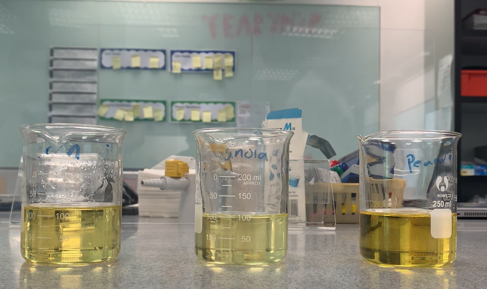
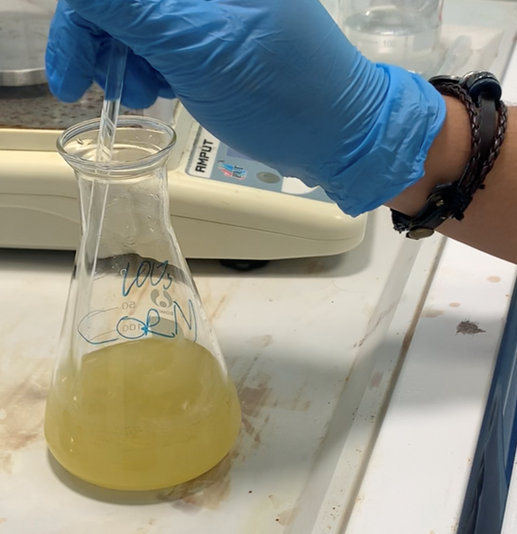

Apparatus
Materials
- Access to a balance
- Access to a centrifuge
- 1x 250 cm3 conical flask
- 2x 100 cm3 beakers
- 1x 10 cm3 measuring cylinder
- 1x 20 cm3 measuring cylinder
- Teat pipettes
- Centrifuge tubes
- Sample tube and label
- Deionised water
- 100g Canola oil
- 100g Peanut oil
- 100g Corn oil
- 100g Methanol
- 50g 50% Potassium hydroxide solution.

Safety
- Need safety goggles in case materials get into eyes
- Need fume hood as methanol gas is flamable and poisonous
- Need safety gloves as potassium hydroxide is corrosive
How to create biodiesel

- First we measured all the materials we needed: 100g of each of the oils, 15g Methanol for each oil, and 1g
of 50 % Potassium Hydroxide.
- placed the beaker containing 100g of oil into the high precision balance.
- We added 15 g of methanol into the beaker inside the high precision balance
- We added 1g of 50% potassium hydroxide to the solution. Make sure to maintain proper safety precautions
- We stirred the solution for 10 minutes
- Let it sit and wait for the layers to separate / Centrifuging the solution can also be another option
Testing the effectiveness of biodiesel
- We had a setup for the alcohol burner fueled by the biodiesel to boil
water in the copper cup and the alcohol burner contained 25g of biodiesel
- We measured the initial temperature of water in the copper cup
- We allowed the fire to burn for 50 seconds
- We measured the temperature of the water after 50 seconds
- We then compared the results from the three types of oils
Results:
- Peanut oil biodiesel | Initial water temperature: 24 | Final temperature: 27
- Canola oil biodiesel | Initial water temperature: 24 | Final temperature: 31
- Corn oil biodiesel | Initial water temperature: 24 | Final temperature: 29